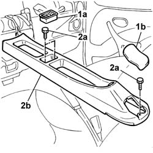
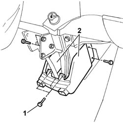
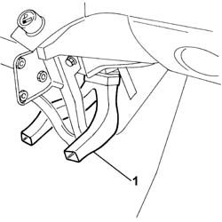
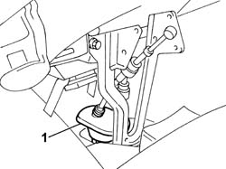
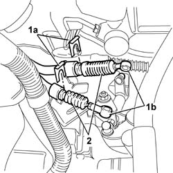
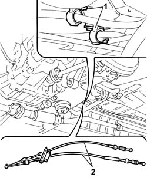

2125C30 gear engagement cable - r r
- Path
- Procedures > 21 GEARBOX UNIT > 2125 MANUAL GEARBOX EXTERNAL CONTROLS > 2125C manual gearbox external control (cables) > 2125C30 gear engagement cable - r r
- Kind
- repair procedure (removal / refitting; the operation number is the code)
- Applies to
- all engines; all production periods
- Interactive page
- https://sloeber94.github.io/elrnDB-fDbl/en/#/2584599
Applies to: all engines; all production periods
 Removing
Removing
 Refitting
RefittingOp. 7040A60 UNDERDASHBOARD TRIM - R.R.
Op. 2125C16 GEAR HAND LEVER SUPPORT - R.R.
Move the two front seats forwards and pull the handbrake lever so that it is in the end of travel position.
1. Remove the coin holder (1a) and the protective cover (1b) behind the handbrake lever.
2. Undo the fixing bolts (2a) and move the tunnel cover (2b) backwards.

Applies to: all engines; all production periods
1. Unscrew the retaining bolts
2. Remove the two shields for the heater unit air vent.

Applies to: all engines; all production periods
1. Remove the air vent which is a press fit on the heater unit.

Applies to: all engines; all production periods
1. Remove the rubber plug from the housing in the floor of the vehicle.

Applies to: all engines; all production periods
Position the vehicle on a lift.
Op. 5530B52 BATTERY SUPPORT/DRIP TRAY - R.R.
1. Remove the two retaining clips.
2. Remove the gear selection and engagement flexible transmission cable ends from the relay unit.
3. Withdraw the two flexible transmission cables from the mounting bracket.

Applies to: all engines; all production periods
Raise the vehicle.
Op. 7055B54 PROTECTION/GUARD UNDER ENGINE - R.R.
1. Release the two flexible cables from the retaining springs on the bodyshell.
2. Remove the two gear selector and engagement flexible cables.

Applies to: all engines; all production periods
Refitting
RemovingPosition the two gear selector and engagement flexible cables.
Secure the two flexible cables to the retaining springs on the bodyshell.
Place the two flexible cables and the rubber plug inside the passenger compartment, via the opening in the bodyshell.
Op. 7055B54 PROTECTION/GUARD UNDER ENGINE - R.R.
Lower the vehicle.
Position the two flexible transmission cables on the mounting bracket on the gearbox.
Press fit the ends of the gear selector and engagement flexible cables and secure them fitting the two springs.
Op. 5530B52 BATTERY SUPPORT/DRIP TRAY - R.R.
Remove the car from the lift.
Continue, working from inside the vehicle.
Fit the rubber plug in the housing in the floor of the vehicle.
Fix the air vent which is a press fit on the heater unit.
Fit the two heater unit air vent shields securing them using the special fixing bolts.
Fit the tunnel cover and secure it using the fixing bolts.
Fit the coin holder and the protective cap behind the handbrake lever.
Return the front seats to their original position and place the handbrake lever in the rest position.
Topics linked from this page (5)
- 2125C16 gear hand-lever - r r
- 5530B10 battery - r+r
- 5530B52 Battery DRIP TRAY/SUPPORT - R.R.
- 7040A60 under facia trim - r+r
- 7055B54 under-engine guard - r r